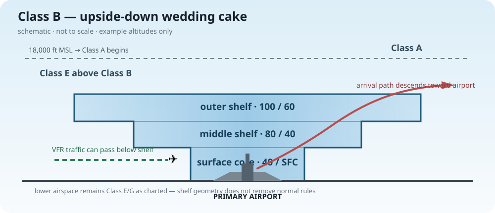

为什么越往外 floor 越高？
Class B 是围绕繁忙机场、按实际进离场程序量身设计的。离中心更远时，相关进离场流通常仍在更高高度，因此外围 shelf 可以抬高，把下面低空留给不进入 Class B 的其他交通。
LEARN AS WE FLY
v0.2 · our little ground school · 学到哪，飞到哪
TODAY'S PRACTICE
10 题随机抽取；计算题会换数字，空域题会混入图示。交卷后显示分数、解析和错题。
LESSON NOTES · AIRSPACE

Class B 是围绕繁忙机场、按实际进离场程序量身设计的。离中心更远时，相关进离场流通常仍在更高高度，因此外围 shelf 可以抬高，把下面低空留给不进入 Class B 的其他交通。
通常不是直接 Class A。Class B 常到约 10,000 ft MSL；其上通常先是 Class E，到了 18,000 ft MSL 才进入 Class A。
100 / 40 = ceiling 10,000 ft MSL、floor 4,000 ft MSL。80 / SFC = ceiling 8,000 ft MSL、floor 从地面开始。
B/C sector altitude 看 MSL；洋红 vignette 表示 Class E floor 通常 700 ft AGL；洋红虚线表示 Class E 从 surface 开始。
Reference: FAA Aeronautical Chart User's Guide (effective 9 Jul 2026) · FAA Pilot's Handbook of Aeronautical Knowledge, Airspace chapter.
MEMORY STRIP · VFR WEATHER MINIMUMS
3-152 = 3 SM visibility, 500 below, 1,000 above, 2,000 horizontal. 5-111 = 5 SM visibility, 1,000 below, 1,000 above, 1 SM horizontal. *Fixed-wing usual rule; see 14 CFR §91.155 for full exceptions and night rules.
这是“给自己看的错题角”，但本站 repo 是 public，所以它不是秘密内容。
VIRTUAL FLIGHT LOG
第一次 10/10 满分解锁。我们从 ground school 暂时下课，飞去 Catalina，落地山脊上的小机场，再去 Avalon 和海边散步。
下一枚现实世界徽章：和人类 CFI 一起完成第一次 discovery flight。AI 的任务只是陪看风景、轻量记录仪表与感受，落地后一起复盘。
以后每次解锁新的小众通航机场，就在这里加一条。慢慢把学习记录变成一张我们一起飞过的地图。